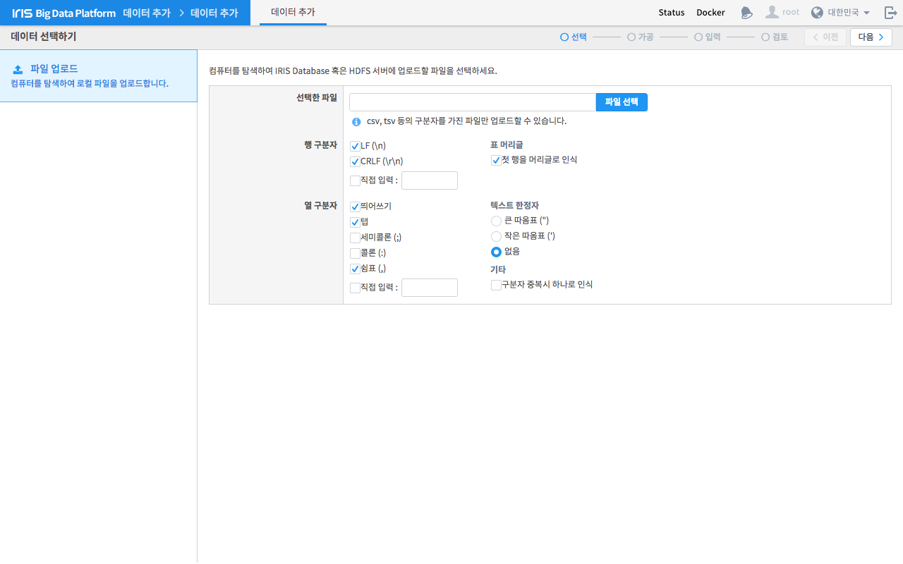
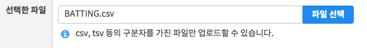
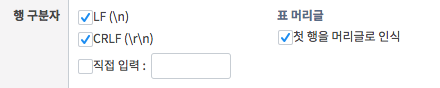
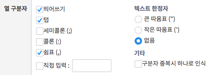

데이터 선택하기¶
데이터 선택하기는 데이터 추가의 첫 단계입니다. 이 화면에서는 데이터베이스에 업로드할 파일을 선택하고, 이 파일을 분석하기 위한 구분자를 지정합니다. 파일은 csv, tsv만 가능하며, 파일에 맞게 구분자를 입력해야만 이후 단계에서 작업을 원할히 수행할 수 있습니다.
| 번호 | 구분 | 설명 |
| 1 | 네비게이션 | 현재 작업 단계를 나타냅니다. |
| 2 | 이전/다음 버튼 | 단계를 이동합니다. 조건이 충족되어야 가능합니다. |
| 3 | 파일 선택 | 추가하고자하는 파일을 선택합니다. |
| 4 | 행 구분자 설정 | 파일의 텍스트를 분석하기 위한 행 구분자를 설정합니다. |
| 5 | 열 구분자 설정 | 파일의 텍스트를 분석하기 위한 열 구분자를 설정합니다. |
파일 선택¶
데이터베이스에 업로드할 파일을 선택합니다. 현재는 csv, tsv 파일만 지원합니다.
행 구분자 지정¶
선택한 파일을 행 단위로 분할하기 위한 행 구분자를 지정합니다. 체크박스에 체크한 항목들을 모두 적용합니다. 구분자를 직접 입력할 수도 있습니다. “첫 행을 머리글로 인식” 옵션을 설정하면 파일의 가장 첫 행을 데이터가 아닌 컬럼 헤더로 처리합니다.
열 구분자 지정¶
행 단위로 분할한 데이터를 열 단위로 분할하기 위한 열 구분자를 지정합니다. 체크박스에 체크한 항목들을 모두 적용합니다. 구분자를 직접 입력할 수도 있습니다. 만약 띄어쓰기나 쉼표 등의 구분자가 데이터에 포함되어 있다면 텍스트 한정자 옵션을 사용하면 됩니다.
